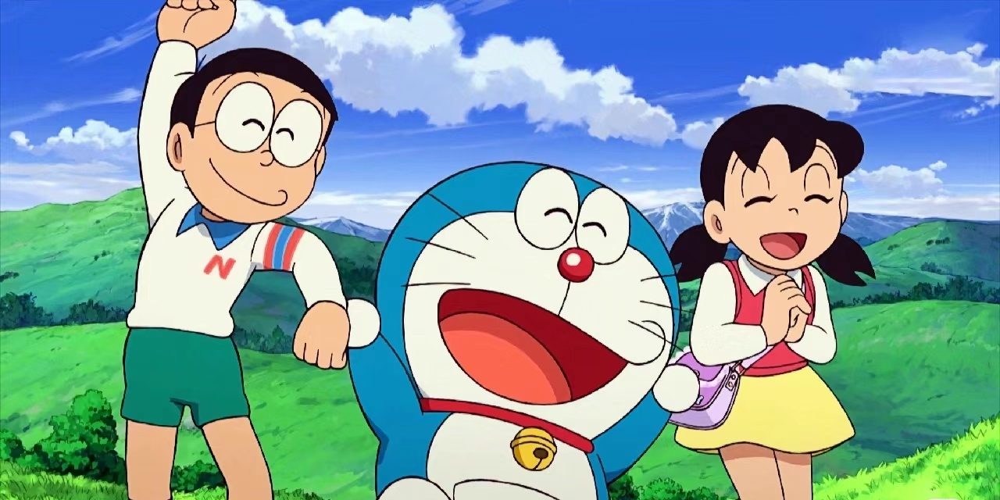

哆啦A梦，旧译为机器猫，日本漫画《多啦A梦》及其衍生作品中的猫型育儿机器人，本作的主人公。名字的意思是铜锣
在2112年9月3日，诞生于日本东京的松芝工厂。在当日的量产线上是0号（第一台）之后所生产的1号（第二台）。制造过程中发生了事故，造成其中一颗螺丝掉落，成为一台“特别的”机器人。之后被送到机器人学校的特别班级，在那里遇到了“哆啦A梦七小子”，并和他们成为朋友。之后哆啦A梦参加机器人学校中举行的机器人销售会，当时还是幼儿的世修（セワシ）不小心按下了购买按钮，因此买下了哆啦A梦（出自《2112年哆啦A梦诞生》）。在《2112年哆啦A梦的诞生》，哆啦A梦作为照顾儿童用的机器人，在大雄的玄孙野比世修家工作。为了要改变差劲的大雄，世修决定叫哆啦A梦返回20世纪帮助大雄。 哆啦A梦”是直接根据原作的日文原名“ドラえもん”音译而来。此一名称若要以意译来翻，则有许多不同看法。